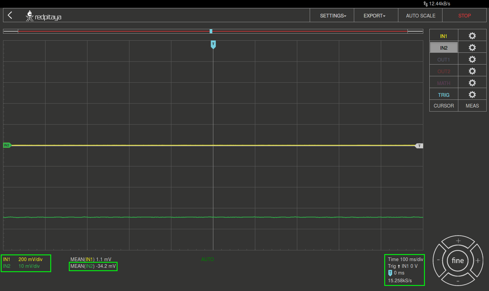

14. OPAMP Open Loop Verstärkung¶
14.1. Zielsetzung¶
Ziel dieses Experiments ist es, die Verstärkungseigenschaften eines OP27-Operationsverstärkers im offenen Regelkreis zu messen.
14.2. Anmerkungen¶
In diesen Tutorials verwenden wir die Terminologie aus dem Benutzerhandbuch, wenn es um die Verbindungen zur Red Pitaya STEMlab Board Hardware geht.
Die Oszilloskop - und Signal generator anwendung wird zum Erzeugen und Beobachten von Signalen auf der Schaltung verwendet.
Die Erweiterungsstecker-Pins für die Spannungsversorgung -3,3V und +3,3V sind in der Dokumentation hier dargestellt.
14.3. Materialien¶
- Red Pitaya STEMlab 125-14. Ein Red Pitaya STEMlab 125-10 ist aufgrund der ADC-Auflösung für diese Messung nicht geeignet!
- OPAMP: 1x OP27
- OPAMP: 1x OP97
- Widerstand: 2x 100 \(\Omega\)
- Widerstand: 2x 200 \(k\Omega\)
- Widerstand: 1x 100 \(k\Omega\)
- Kondensator: 2x 0.1 \(\mu F\)
- Kondensator: 1x 10 \(\mu F\)
14.4. Hintergrund¶
Im Gegensatz zum idealen Operationsverstärker hat ein praktischer Operationsverstärker eine endliche Verstärkung. Die ungeregelte DC-Verstärkung (meist als \(A_{VOL}\) und manchmal als Vorwärtsverstärkung bezeichnet) ist die Verstärkung des Opams, ohne dass der Rückkopplungskreis geschlossen ist, daher der Name „open-loop“. Für einen Präzisionsoperationsverstärker kann diese Verstärkung sehr hoch sein, in der Größenordnung von 160 dB (100 Millionen) oder mehr. Die Verstärkung des OP27 -Verstärkers beträgt etwa 1,8 Millionen.
Abb. 14.1 : OP27 Datenblatt und Open Loop Gain Wert markiert
Die Definition von Open-Loop-Verstärkung ist
wobei \((V^{+}-V^{-})\) die Eingangsspannungsdifferenz \(V_d\) ist, die verstärkt wird, \(V^{+}\) eine Spannung am nichtinvertierenden Eingang und \(V^{-}\) Spannung am invertierenden Eingang.
Spannungsrückkopplungs-Operationsverstärker arbeiten als Spannungsein- und -ausgangsverstärker und die Verstärkung ist ein dimensionsloses Verhältnis, so dass keine Einheiten erforderlich sind. In den Datenblättern wird jedoch manchmal der Gewinn in \(V/mV\) oder \(V/ \mu V\) anstelle von \(V/V\) angegeben, um die Verwendung kleinerer Zahlen zu ermöglichen. Oder, die Spannungsverstärkung kann auch in dB ausgedrückt werden, als Verstärkung in
Bemerkung
Also eine Open-Loop-Verstärkung von
Lesen Sie das Tutorial zu Open Loop Gain und Open Loop Gain Nonlinearity, bevor Sie diese Experimente durchführen.
14.5. Verfahren¶
Die Gleichstromverstärkung wird gemessen, indem der Ausgang des Prüflings (OPAMP unter Test eines OP27 in unserem Fall) gezwungen wird, sich um einen bekannten Betrag zu bewegen (1V in unserem Fall, siehe Abb. 14.2), indem R5 zwischen dem Prüflingsausgang (OP27 Pin 6) und einer 1V-Referenz (STEMlab OUT1 Ausgang) mit dem Schalter S umgeschaltet wird. Wenn R5 bei +1V (Schalter S Position POS2) liegt, dann muss der Prüflingsausgang (OP27 Pin6) auf -1V verschoben werden, wenn der Eingang des Hilfsverstärkers unverändert bei Null bleiben soll. Die Spannungsänderung am Hilfsverstärkerausgang \(V_{out}\) (OP97 Pin 6), gedämpft durch den R3/R1 -Faktor, ist der Eingang zum Prüfling (OP27 Pin 3), der eine 1V-Ausgangsänderung bewirkt, aus der einfach die Verstärkung berechnet werden kann:
Bemerkung
Mit anderen Worten, DUT-Eingangsdifferenzspannung \(V_d = V^{+} + {V^-}\), (wobei \(V^-=0\) und \(V_d =V^+\)), die notwendig ist, um den DUT-Ausgang auf -1 V einzustellen, ist \(\frac{V_ {out}}{A_ {OL}}\).
Der Prüflingsausgang muss auf -1 V gehen, da sich unser AUX-Operationsverstärker in einer Rückkopplungsschleife befindet und versucht, seinen \(V_d\) auf 0V zu drücken.
Beispiel:
Wenn wir \(A_ {OL} = 1.8E6\) nehmen, dann müssen wir für 1V am DUT(OP27)-Ausgang eine Eingangsspannung \(V_d\) als Folgespannung haben:
Bemerkung
Theoretisch konnten wir zur Messung von \(A_{OL}\) nur einen Signalgenerator (zur Einstellung des \(V_{d}\)) und ein Voltmeter zur Messung der Prüflingsleistung verwenden. Aber in der Praxis ist dies fast nicht haltbar gegenüber Unvollkommenheiten, Lärmpegeln, Offsetpegeln und so weiter. Aus diesem Grund verwenden wir das in Abb. 14.2 dargestellte Verfahren, bei dem wir die Messungen des Ausgangssignals \(V_{out}\) durchführen, das durch den Spannungsteiler (R3/R2) auf \(V_{d}\) bezogen ist und einige Größenordnungen größer als \(V_{d}\) und somit mit unseren Geräten messbar ist.
Bauen Sie die in Abb. 14.2 dargestellte Schaltung auf. Bevor Sie die Widerstände R2 und R3 in die Schaltung einsetzen, messen und notieren Sie die Werte der beiden Widerstände mit einem DMM, falls vorhanden.
In unserem Fall ist R3 = 97.3k \(\Omega\) und R2 = 99.7 \(\Omega\)
Warnung
Bevor Sie die Schaltung an die STEMlab-Pins -3,3V und +3,3V anschließen, überprüfen Sie Ihre Schaltung nochmals. Die Spannungsversorgungsstifte -3,3V und +3,3V haben keine Kurzschlusssicherung und können im Falle eines Kurzschlusses beschädigt werden.

Abb. 14.2 : Spannungsversorgung und Testschaltung
Warnung
Der C1-Kondensator wird als Rückkopplungsimpedanz auf die Umkehrverstärker-Konfiguration des AUX-Operationsverstärkers verwendet. Dies geschieht, um alle Wechselstromsignale in der Schaltung und den AUX-Operationsverstärkerausgang zu dämpfen. Aus diesem Grund ist es gut, eine große Kapazität von C1 zu haben, um Wechselstromsignale zu eliminieren.
Wir haben uns für 10uF entschieden und hier einen polarisierten (elektrolytischen) Kondensator verwendet. Dies ist keine „ok“-Lösung, da unser Kondensator einer umgekehrten Polarisation unterzogen werden kann. Für gute Messungen und kurze Messzeiten kann jedoch der Elektrolytkondensator verwendet werden.
14.6. Schritt 1: S ist auf POS1 (Abb. 14.2)¶
Anstatt den Schalter S zu verwenden, kann R5 manuell auf Pin6 des Prüflings auf der Leiterplatte eingestellt werden. Bauen Sie eine Schaltung auf der Platine auf und stellen Sie R5 auf POS1 ein.
Verbinden Sie OUT1 mit IN1 und stellen Sie die Tastkopfdämpfungen auf x1 ein.

Abb. 14.3 : Testschaltung. R5 auf POS1 (siehe Abb. 14.2)
Starten Sie die Oszilloskop & Signalgenerator - Anwendung
Stellen Sie sicher, dass IN1 V/div auf 500mV/div und IN2 V/div auf 10mV/div eingestellt ist (Sie können V/div einstellen, indem Sie den gewünschten Kanal auswählen und vertikale +/- Regler verwenden).
Setzen Sie t/div mit horizontalen +/- Bedienelementen auf 100 ms/div
Wählen Sie im Messmenü „MEAN“, wählen Sie IN1 und drücken Sie FERTIG, wählen Sie IN2 und drücken Sie FERTIG
Anzeige MEAN (IN2): In unserem Fall ist es -34.2mV
Abb. 14.4 : Messungen von \(V_ {out}\) wenn R5 auf POS1 gesetzt wird (siehe Abb. 14.2)
14.7. Schritt 2: S ist auf POS2 (Abb. 14.2)¶
Baue eine Schaltung auf dem Steckbrett und setze R5 auf POS2.

Abb. 14.5 : Testschaltung. R5 auf POS2 (siehe Abb. 14.2)
Wählen Sie im Einstellungsmenü OUT1 aus dem Wellenform-Menü die Option DC. Amplitudenwert auf 1V einstellen, um eine 1V Gleichspannung an die Schaltung (R5) anzulegen.
Deaktivieren Sie die SHOW-Schaltfläche und wählen Sie Enable.
Passen Sie die OUT1-Amplitude an, bis MEAN (IN1) nahe 1V erscheint.
Anzeige MEAN (IN2): In unserem Fall ist es -34.8mV

Abb. 14.6 : Messungen von \(V_ {out}\) wenn R5 auf POS2 gesetzt ist (siehe Abb. 14.2)
Bemerkung
Wie Sie den Messungen entnehmen können, gibt es einen gewissen Offset der AUX-Operationsverstärker-Ausgang (Pin 6). Idealerweise, wenn R5 auf POS1 eingestellt ist (Abb. 14.2) sollte \(V_ {out}\) 0 sein.
Dennoch ist der DC-Offset bei beiden (POS1 und POS2) Messungen gleich und wird bei der Berechnung der Open-Loop-Verstärkung aufgehoben.
Für eine offene Schleifenverstärkung gemäß Gleichung 2 erhalten wir:
Vergleichen Sie die Messungen mit dem Datenblattwert aus Abb. 14.2. Unsere Messungen liegen sehr nahe am Sollwert. Für eine genauere Messung ist eine Ausrüstung mit höherer Auflösung und weniger störenden Umgebungsgeräuschen erforderlich.